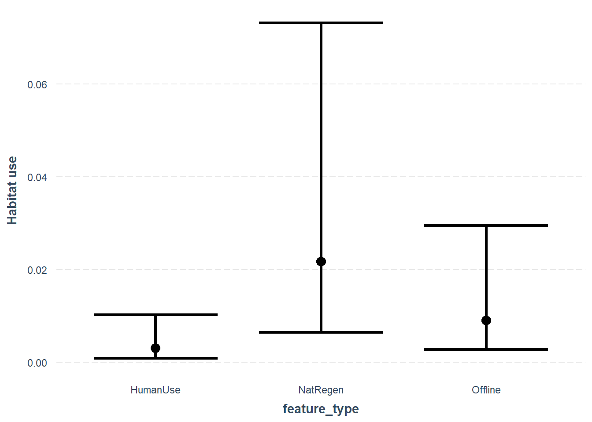
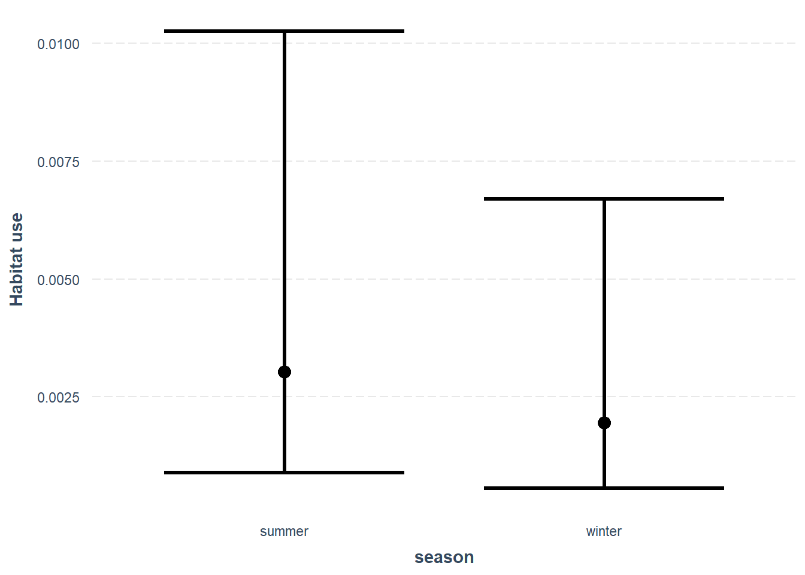
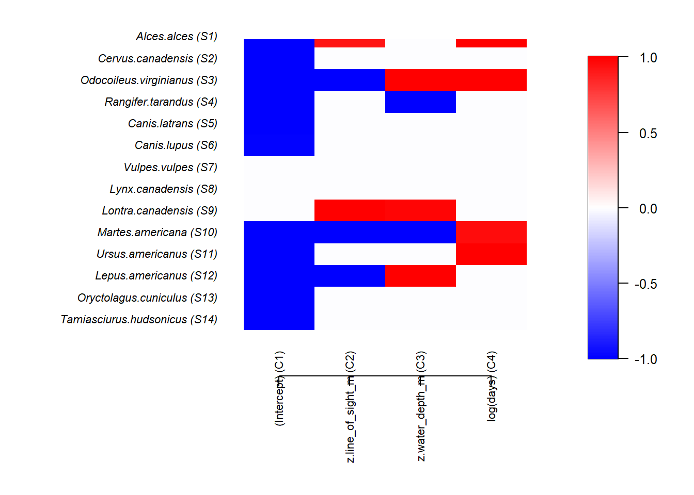

Chapter 10 Habitat use
Camera traps are well suited for the quantification of habitat use across multiple species. To assess habitat use, we typically quantify the detection rate - the number of detections divided by the time interval of interest. As detection rates are fairly simple to estimate and conceptually simple to understand, thus their use is widespread in the camera trap literature.
In its simplest form habitat use represents the number of independent events of a given species at a given camera, divided by the number of days that camera was active during that period of interest.
This ‘detection rate’ is thought to reflect the habitat use of a species at a given location. Extreme care should be taken if you want to equate use with abundance or density - something we discuss a little more in the density chapter.
Detection rates are typically analysed in a linear modelling framework, and come in single species and multi-species versions (see below).
Create a new .R script
Call it 05_example_habitat_use.R.
Load the required packages
# Check you have them and load them
list.of.packages <- c("kableExtra", "tidyr", "ggplot2", "gridExtra", "lme4", "dplyr", "Hmsc", "jtools", "lubridate", "corrplot", "MuMIn")
new.packages <- list.of.packages[!(list.of.packages %in% installed.packages()[,"Package"])]
if(length(new.packages)) install.packages(new.packages)
lapply(list.of.packages, require, character.only = TRUE)10.1 Calculating capture rate
We will start by using the total_obs dataframe we have used in previous chapters:
# Import the total observations dataset
total_obs <- read.csv("data/processed_data/AlgarRestorationProject_30min_independent_total_observations.csv", header=T)
# Import your species list
sp_summary <- read.csv("data/processed_data/AlgarRestorationProject_species_list.csv", header=T)
# Create a dataframe to store these detection rates
total_cr <- total_obs
# Divide the species abundances (which start in column four), by the amount of camera effort
total_cr[ ,sp_summary$sp ] <- (total_cr[ , sp_summary$sp]/total_cr$days)*100
# Make a plot of observations vs. capture rate
plot(total_cr$Odocoileus.virginianus ~ total_obs$Odocoileus.virginianus,
las=1, pch=19,
ylab="Capture rate per 100 days",
xlab="Number of independent records")As you can see there is not a perfect match as the capture rate accounts for the variation in effort between different sites.
10.2 Single-species models
The most common way to analyse habitat-use data is through linear models. Linear models typically relate a continuous response variable - in our case capture rate - to a set of one or more discrete or continuous predictor variables. In this simple example we will explore the relationship between the capture rate of a species with the categorical ‘feature_type’ variable and the continuous line_of_sight_m variables.
There are a variety if different frameworks to fit and compare different linear models to address a host of different hypotheses, but if you are just starting out you should investigate two widely used packages:
lme4-> frequentest and information theoretic approachesbrms-> Bayesian approaches
There is no right or wrong about which package and which approach you use to test your hypotheses. Some packages have functionalities that others don’t, which may force your hand. Just make sure you understand the implications of your choices when it comes to reporting your results!
10.2.1 Simple linear model
We will start by analyzing a frequentest linear model with a single observation for each camera location.
In this worked example we will analyse how habitat use varies using a linear model lm(). The model takes the form:
Response term (y) ~ fixed effect 1 (x1) + fixed effect 2 (x2), data frame (data=)
It is beyond the scope of this course to test the model assumptions or interrogate the findings, there are better resources to allow you to do that (e.g. we highly recommend reading Gałecki, Andrzej, and Tomasz Burzykowski. “Linear mixed-effects model.” Linear mixed-effects models using R. Springer, New York, NY, 2013. 245-273).
In this example we will explore if the habitat use of Odocoileus virginianus varies based on the `feature_type’ the line of sight where it is found.
Preparing our data
Recall that the information about each location is recorded in the file:
# Import locations
locs <- read.csv("data/processed_data/AlgarRestorationProject_camera_locations_and_covariates.csv", header=T)
# Convert to categorical factors
locs <- locs %>%
mutate_if(is.character,as.factor)
# Standardize
# You should also standardize your covariates - it helps models coverage an facillitates comparison of effects sizes
library(MuMIn)
z_locs <- stdize(locs)
# Add the covariate data to the capture rate datframe
mod_dat <- left_join(total_cr, z_locs) # from the dplyr package## Joining with `by = join_by(placename)`10.2.2 Catagorical predictor
So we start by exploring the influence of ‘feature_type’ on our response term.
feature_type is a a categorical variable which reflects strata where the camera trap was deployed:
- HumanUse = a camera on a seismic line used and maintained in an “open” state by humans
- Offline = a camera in contiguous forest >200m from a seismic line
- NatRegen = a seismic line which is naturally regenerating
Lets do a quick raw data plot to see what results we might expect:
boxplot(mod_dat$Odocoileus.virginianus~mod_dat$feature_type,
las=1,
xlab="feature_type",
ylab="Habitat use")
It looks like white-tailed deer habitat use may be higher in naturally regenerating areas, but there is a lot of overlap between sites.
Next we will fit a simple linear model using the `lm()’ function in base R.
# model results <- lm( Y data ~ x Data, data= dataframe source)
lm_cat <- lm(Odocoileus.virginianus ~ feature_type, data = mod_dat)
# And check the output
summary(lm_cat)##
## Call:
## lm(formula = Odocoileus.virginianus ~ feature_type, data = mod_dat)
##
## Residuals:
## Min 1Q Median 3Q Max
## -3.8377 -2.5572 -0.9958 1.4862 7.4681
##
## Coefficients:
## Estimate Std. Error t value Pr(>|t|)
## (Intercept) 1.1645 0.8838 1.318 0.1962
## feature_typeNatRegen 2.6732 1.3324 2.006 0.0526 .
## feature_typeOffline 2.1782 1.2737 1.710 0.0961 .
## ---
## Signif. codes: 0 '***' 0.001 '**' 0.01 '*' 0.05 '.' 0.1 ' ' 1
##
## Residual standard error: 3.307 on 35 degrees of freedom
## Multiple R-squared: 0.1208, Adjusted R-squared: 0.07061
## F-statistic: 2.405 on 2 and 35 DF, p-value: 0.105Categorical covariates are show as contrasts from the reference level (in this case HumanUse), and the p-value relate to testing whether the other categories are significantly different from the reference level. Other things to note are that our R-squared value (how much variation the model explains) is fairly low - but that is common in camera trap models.
We can take a quick look at the predictions using the jtools package. More examples of its use are can be found in the `Visualizing regression model predictions vignette associated with the package.
effect_plot(lm_cat, # The model object
pred = feature_type, # The variable you want to predict
interval = TRUE, # Whether you want confidence intervals (default = 0.95)
partial.residuals = T, # Show the residual variation -after accounting for fixed effects
y.label = "Habitat use") # Change the y axis label10.2.3 Continuous predictor
Let’s also explore a continuous predictor line_of_sight_m': We will fit a simple linear model using thelm()’ function in base R.
# model results <- lm( Y data ~ x Data, data= dataframe source)
lm_con <- lm(Odocoileus.virginianus ~ z.line_of_sight_m, data = mod_dat)
# Look at the output
summary(lm_con)##
## Call:
## lm(formula = Odocoileus.virginianus ~ z.line_of_sight_m, data = mod_dat)
##
## Residuals:
## Min 1Q Median 3Q Max
## -3.9177 -2.7046 -0.5994 1.6422 7.0377
##
## Coefficients:
## Estimate Std. Error t value Pr(>|t|)
## (Intercept) 2.6835 0.5157 5.203 8.06e-06 ***
## z.line_of_sight_m -1.3898 0.5227 -2.659 0.0116 *
## ---
## Signif. codes: 0 '***' 0.001 '**' 0.01 '*' 0.05 '.' 0.1 ' ' 1
##
## Residual standard error: 3.179 on 36 degrees of freedom
## Multiple R-squared: 0.1642, Adjusted R-squared: 0.141
## F-statistic: 7.071 on 1 and 36 DF, p-value: 0.01162Here the effect represents the gradient of the relationship between line_of_sight_m and the habitat use of white-tailed deer. The effect is negative, and the p-value is below the arbitrary 0.05 threshold, which suggests it my be an important predictor of white-tailed deer habitat use.
It will make more sense if we plot it - again using jtools
effect_plot(lm_con, # The model object
pred = z.line_of_sight_m, # The variable you want to predict
interval = TRUE, # Whether you want confidence intervals (default = 0.95)
partial.residuals = T, # Show the residual variation -after accounting for fixed effects
y.label = "Habitat use") # Change the y axis label10.2.4 Model comparisons
There are times when we may want to compare which model is “the best”, or which model is the most parsimonious. One way to do this is through the use of Information Theory - we can compare which model explains the most amount of variation after applying a penalty for how complex it is (more complex models will always explain more variation, even if just by chance).
One useful package for this is the MuMIn package and the function model.sel() for model selection:
library(MuMIn)
# Lets also create a "null model" something without any predictors in at all, to compare these models to:
lm_null <- lm(Odocoileus.virginianus ~ 1, data = mod_dat)
# Compare the results
model.sel(lm_null, lm_cat, lm_con)## Model selection table
## (Int) ftr_typ z.lin_of_sgh_m df logLik AICc delta weight
## lm_con 2.683 -1.39 3 -96.844 200.4 0.00 0.821
## lm_cat 1.164 + 4 -97.805 204.8 4.43 0.090
## lm_null 2.683 2 -100.252 204.8 4.45 0.089
## Models ranked by AICc(x)Whilst both models improve on the null model, there is stronger support for line_of_sight_m than for our feature types in influencing white-tailed deer habitat use. Cool!
10.2.5 Problems with these models
But can you see any problems with this type of model?
We probably should be concerned about the fact that:
- There are negative predictions for both sets of confidence intervals - but you can’t get a negative capture rate!
- We do not account for seasonality - we saw species detection rates change with time of year in the data exploration section
And more besides!
10.2.6 Mixed-effects models
Let’s build a more robust habitat-use model which addresses some of the issues highlighted here. To do this we will take advantage of a type of analysis called ‘mixed effects modelling’. Mixed effects models allow us to perform robust analysis of populations which have been repeatedly sampled through time. As such, we can break our data set down into months without violating the assumptions of the models.
If you are new to mixed effects models you must try this fantastic interactive aid to help you understand how they work: Michael Freeman’s ‘An Introduction to Hierarchical Modeling’
And for a deep-dive into the inner workings of mixed effects models and their assumptions, see the following paper: Harrison, Xavier A., et al. “A brief introduction to mixed effects modelling and multi-model inference in ecology.” PeerJ 6 (2018): e4794.
First we must install the packages we require: ‘lme4’ and `tidyr’:
library(lme4); library(tidyr)
# Import the monthly observations dataset
monthly_obs <- read.csv("data/processed_data/AlgarRestorationProject_30min_independent_monthly_observations.csv", header=T)
# Add the locations (as before)
mod_dat <- left_join(monthly_obs, z_locs)## Joining with `by = join_by(placename)`# extract month from the data frames
mod_dat$date <- ym(mod_dat$date)
mod_dat$month<- month(mod_dat$date, label=T)
# Convert month into a simple summer and winter comparison
mod_dat$season <- "summer"
mod_dat$season[month(mod_dat$date) %in% c(10,11,12,1,2,3)] <- "winter"
# make it a factor
mod_dat <- mod_dat %>%
mutate_if(is.character,as.factor)
# Run the model
glmm_cat <- glmer.nb(Odocoileus.virginianus ~
feature_type + season + offset(log(days)) + (1|placename) , data=mod_dat)
# Check the model fit
summary(glmm_cat)## Generalized linear mixed model fit by maximum likelihood (Laplace
## Approximation) [glmerMod]
## Family: Negative Binomial(0.8362) ( log )
## Formula: Odocoileus.virginianus ~ feature_type + season + offset(log(days)) +
## (1 | placename)
## Data: mod_dat
##
## AIC BIC logLik deviance df.resid
## 1337.6 1364.9 -662.8 1325.6 691
##
## Scaled residuals:
## Min 1Q Median 3Q Max
## -0.8336 -0.4267 -0.1919 -0.1210 6.5197
##
## Random effects:
## Groups Name Variance Std.Dev.
## placename (Intercept) 3.758 1.939
## Number of obs: 697, groups: placename, 38
##
## Fixed effects:
## Estimate Std. Error z value Pr(>|z|)
## (Intercept) -5.7986 0.6205 -9.345 <2e-16 ***
## feature_typeNatRegen 1.9662 0.8612 2.283 0.0224 *
## feature_typeOffline 1.0860 0.8379 1.296 0.1949
## seasonwinter -0.4427 0.1566 -2.827 0.0047 **
## ---
## Signif. codes: 0 '***' 0.001 '**' 0.01 '*' 0.05 '.' 0.1 ' ' 1
##
## Correlation of Fixed Effects:
## (Intr) ftr_NR ftr_tO
## ftr_typNtRg -0.695
## ftr_typOffl -0.694 0.497
## seasonwintr -0.073 -0.011 -0.008We can plot the predictions from these models using the jtools package.
First lets look at the effects of feature_type:
effect_plot(glmm_cat, pred = feature_type, interval = TRUE, y.label = "Habitat use",
, data=mod_dat)## Outcome is based on a total of 1 exposures## Confidence intervals for merMod models is an experimental feature. The
## intervals reflect only the variance of the fixed effects, not the random
## effects.
As with our simple linear model, the mixed effects model also suggests a difference between the different feature_type strata for white-tailed deer.
Lets also look at the effect of our new season variable:

Which suggests habitat use is slightly lower habitat use in winter then in summer.
10.2.7 Advanced mixed-model predictions
Tools such as jtools are great for generating simple predictions from mixed models, however the more complex the models get, the more you may want to specify your own prediction dataframes.
If you want more applied examples of generating predictions from mixed effects models, check out Ben Bolkers workbook. There is also some great discussion about model selection and r-squared values.
10.3 Multispecies models
In the above examples, we analyse each individual species separately. This is great if you only care about one species, however we often want a more holistic understanding of wildlife communities! Recent advances in computer power and analytic approaches mean it is becoming increasingly popular to model multiple species within the same framework! This opens up a variety of things not previously possible.
A note of caution In experimenting with single species models you may have realized it can sometimes be hard to build a sensible and robust model. Now do this for >10 species in the same model, and the potential to get silly results increases. Tread carefully!
As with single species linear models, there are many choices available for modeling multiple species in the same framework. Two notable options are:
In this example we will use the Hmsc package.
library(Hmsc)
# Prepare our data
# Pull the count data into its own matrix
Y <- as.matrix(monthly_obs[,sp_summary$sp])
# Give the row names a useful label, in this case the site_date values
# (just in case you want to check things)
row.names(Y) <- paste(monthly_obs$placename, monthly_obs$date, sep="_")
# Join with the location data
Xdat <- left_join(monthly_obs[c("placename", "date", "days")], z_locs)
# All XData must be numeric or factors, so lets check what we have
# Set up the sampling conditions
nChains = 2 # How many total repeats to run
thin = 5 # How often to thin the samples
samples = 100 # How many samples to take
transient = 200 # How long should the "warm up" be
verbose = T # Give reports on model progress
# Specify the random effects
# Add a station-level random effect (for the co-variances)
studyDesign = data.frame(station = as.factor(Xdat$placename))
rL = HmscRandomLevel(units = studyDesign$station)
# Model specification
mod <- Hmsc(Y = Y,
XData = Xdat[,c("z.line_of_sight_m", "z.water_depth_m", "days")],
XFormula = ~z.line_of_sight_m + z.water_depth_m + log(days),
studyDesign = studyDesign,
ranLevels = list(station = rL),
distr="poisson")
# Fit the model
out <- sampleMcmc(mod, thin = thin, samples = samples, transient = transient,
nChains = nChains, verbose = verbose)We can plot a basic summary of the modeled effects using the following code.
postBeta = getPostEstimate(out, parName = "Beta")
par(mar=c(8,12,1,1))
plotBeta(out, post = postBeta, param = "Support", supportLevel = 0.95)
We the colors denote the size and magnitude of the effect of proportion of lowland habitat. NOTE treat these results with caution as the number of model runs is very low (to increase speed) and the model assumptions have not been interrogated.
OmegaCor = computeAssociations(out)
supportLevel = 0.0
toPlot = ((OmegaCor[[1]]$support>supportLevel)
+ (OmegaCor[[1]]$support<(1-supportLevel))>0)*OmegaCor[[1]]$mean
corrplot(toPlot,
method = "color",
type="upper",
order = "FPC",
col = colorRampPalette(c("blue","white","red"))(200),
title = paste("random effect level:",
mod$rLNames[1]), mar=c(0,0,1,0))10.3.1 Potential dangers
The analysis has worked and we have some really stylish output! But - take screenshots of the output and run it again. Compare your screen shots.
Bayesian solvers don’t work the same way as frequentist approaches. With frequentist approaches you get the same result every time, with bayesian approaches a solver explores the parameter space to “find” the right solution. If you do not give time for the solver to coverage on the right solution, you will get a result that is not in the slightest bit reliable!
For a nice overview on assessing Bayesian model convergence see Michael Clark’s bayseian model diagnostics page.
Let’s have a look at our traceplots - these are plots which show the Bayesian solvers efforts to converge on the answer for each parameter with each iteration of the model (red and black done the different runs). If they have converged on a solution they should be steady and stable, the coloured lines on the left should overlap and the density plot on the right should be uni-modal.
First for the fixed effects in the model:
What do you think?
These sampling chains will have to be much longer for these models to converge!
10.3.2 Further reading
The best place for examples of HMSC analyses right now are package vignettes:
Getting started with HMSC-R: univariate models
Getting started with HMSC-R: low-dimensional multivariate models
Getting started with HMSC-R: high-dimensional multivariate models